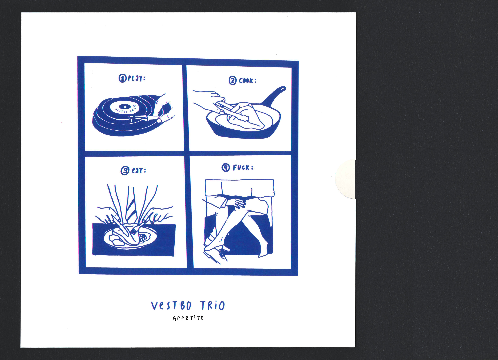
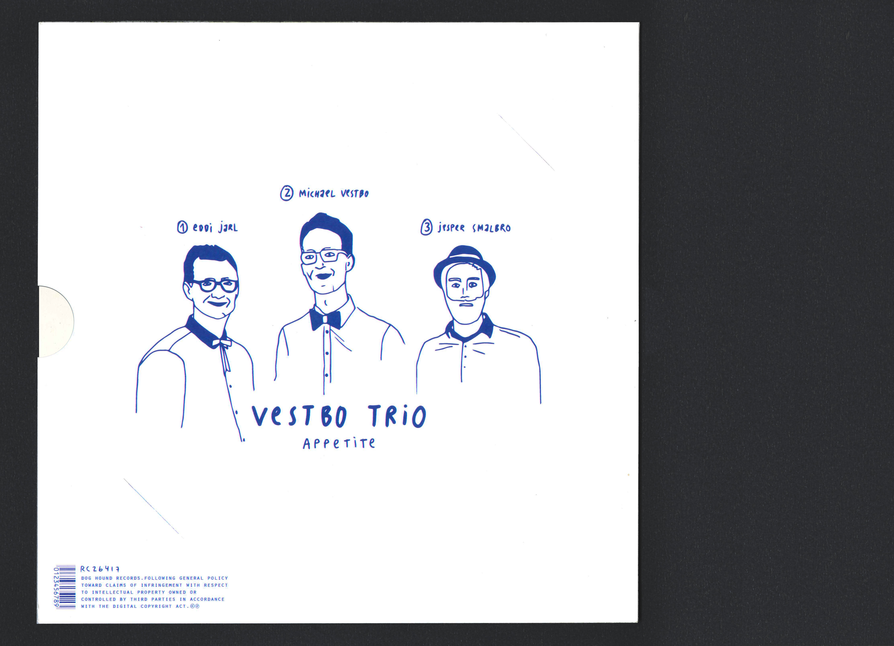
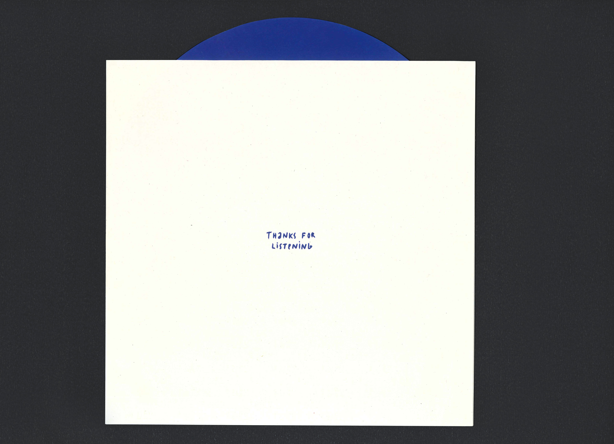
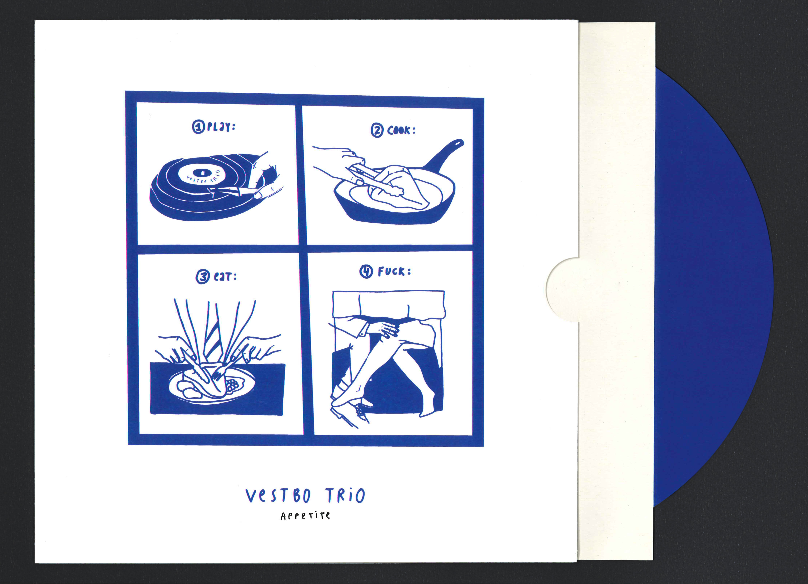
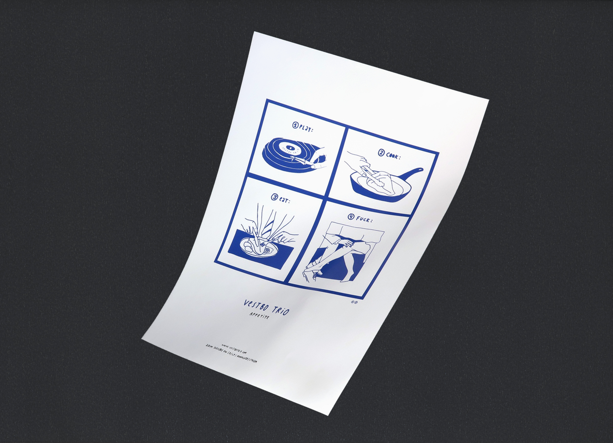

Album art for Vestbo Trio
In visuals and nameing, Danish jazz band Vestbo Trio wished to combine the world of cooking with their new record.
The album art was based on the idea of a recipe - a step-by-step guide. The cover should reflect the listening experience combined with the qualities of cooking: being together, creating something, enjoyment, relaxation and so on. However, a recipe is often cut to the bone, leaving excess explanations out. The artwork therefore became a visual step-by-step guide for a nice evening. The album was named Appetite, which seemed appropriate for the cooking, the music and the night.
    